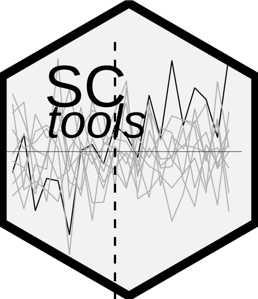

SCtools 
This package is a work in progress compiling functions to make it easier running placebo in space tests with synthetic control models and SCM with multiple treated units. It relies heavily on the ‘Synth’ package.
You can install it on CRAN with:
install.packages("SCtools")You can install it with ‘devtools’.
library(devtools)
install_github("bcastanho/SCtools")Or with the ‘remotes’ package
library(remotes)
install_github("bcastanho/SCtools")Please note that the ‘SCtools’ project is released with a Contributor Code of Conduct. By contributing to this project, you agree to abide by its terms.